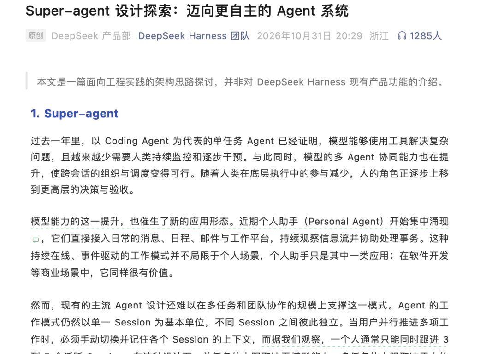
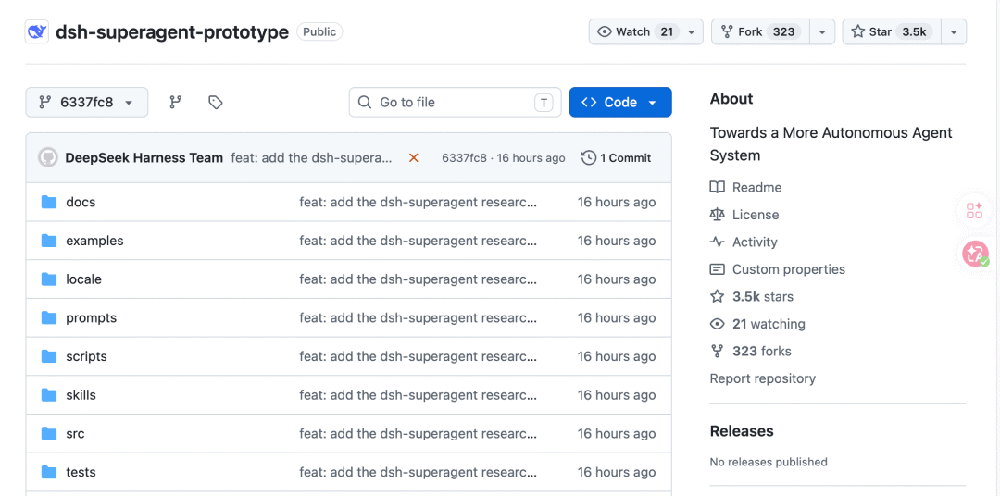
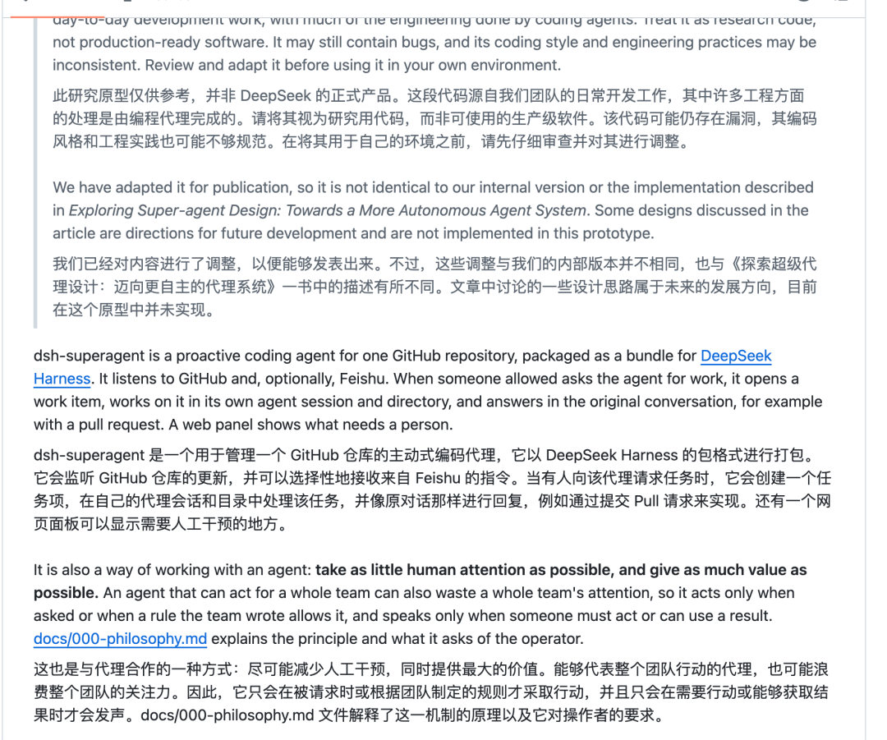
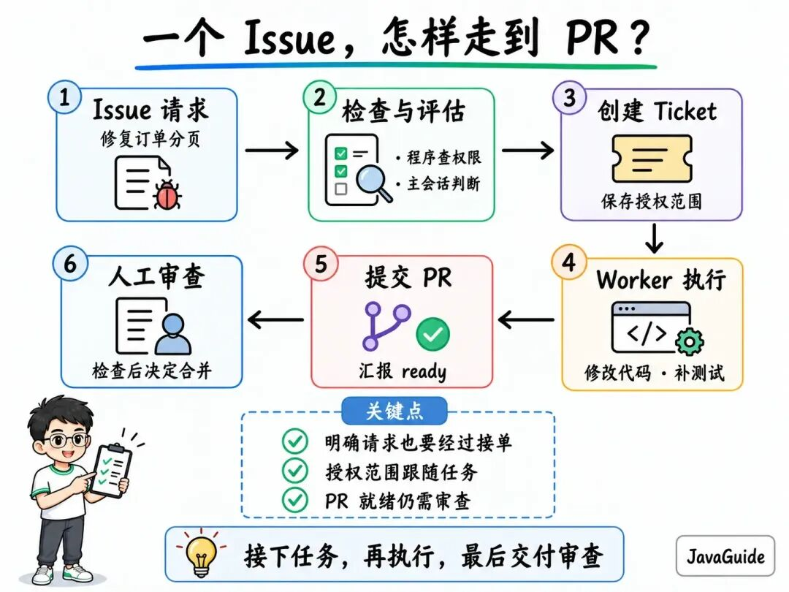
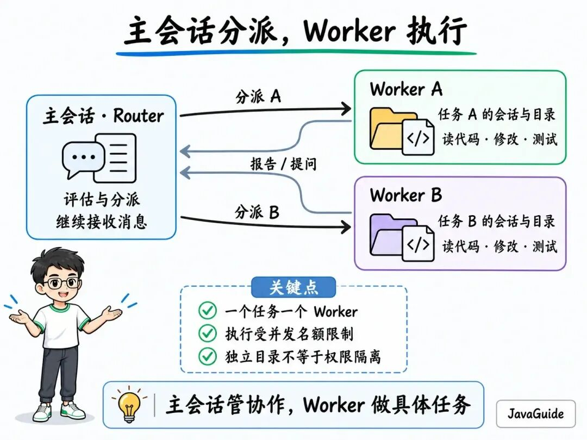
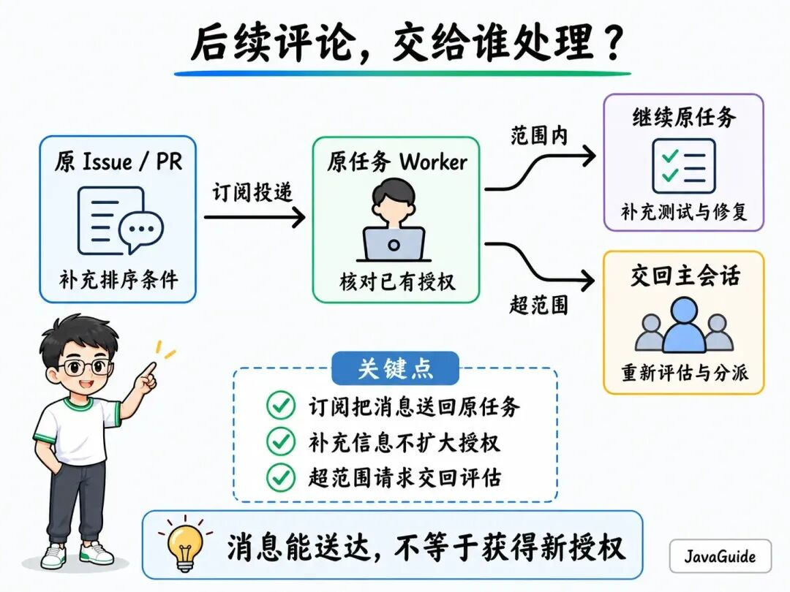
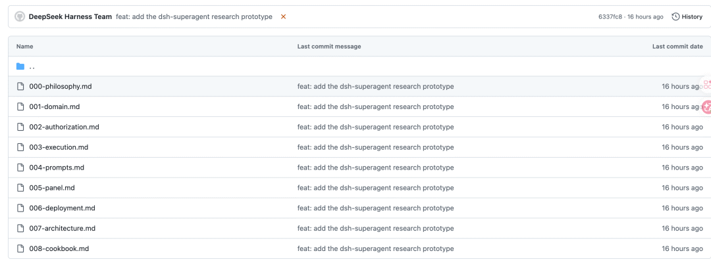

重磅！DeepSeek 开源超级 Agent
来源：微信公众号 归档日期：2026-11-05 抓取状态：成功 原文字符：7764｜配图：8 张
摘要速览
- 群同步待补摘要 · 微信公众号
核心内容
（待补充）
可执行启发
（待补充）
我的想法
（待补充）
原文沉淀
目录
- Super-agent 是什么
- Super-agent 有什么用
- 先确认，这件事有没有授权
- 主会话接任务，Worker 执行
- 测试没跑完，后续消息交给谁
- PR 提交了，面板为什么还在等人
- 重启以后，从哪里接着做
- 团队的交付要求，写在哪里
- 这套官方文档可以看看
DeepSeek 又开源新东西了，这次是一个面向 GitHub 仓库的主动式编程 Agent 研究原型：Super-agent。

你可以把修复 Bug、补测试这类开发任务交给它。它会在独立的会话和工作目录里处理，把 PR 等结果回复到原对话，后续的评论、CI 结果和评审意见也能继续送回对应任务。

DeepSeek Super-agent GitHub 仓库概览
Super-agent 是什么
DeepSeek 在官方文章中，用 Super-agent 描述一种持续在线、由环境事件驱动、能够跨会话推进多项任务的 Agent 形态。
这次公开的 dsh-superagent-prototype，是面向单个 GitHub 仓库的研究原型。本文主要结合它的文档和代码，介绍接单、执行与持续跟进的过程。
它作为插件运行在 DeepSeek Harness 中。前面介绍 Harness 时，我们讲过它如何把模型调用、工具执行和结果接起来；Super-agent 复用这些能力，增加了接单、分派、跟进和交付机制。
DeepSeek 将它定位为供参考的研究代码，并注明它不是 DeepSeek 的正式产品。公开版本经过调整，与内部版本及设计文章中的实现并不完全相同。

README 中的研究原型说明与协作原则（双语截图）
Super-agent 有什么用
代码改完以后，事情可能还没结束。CI 测试失败，评审提出了一个边界条件，你又在评论里补充了复现方式。这些消息需要回到对应任务，Agent 才能接着上一次的修改处理。
Super-agent 会记录任务的授权和执行状态，把跟进消息交给对应的执行会话，需要人回答或审查的事项则显示在面板上。开发者可以在原来的 Issue、PR 或飞书对话里继续交流。
它给协作定了一个原则：尽量少占用人的注意力，多交付有用的结果。
按默认约定，它会先确认请求中的对象和预期结果，之后在结果可供审查、需要人做决定或无法完成时再回复。一个接入团队的 Agent，要是每读一个文件都发一条进度消息，同事很快就不想看它的通知了。
我看了它的文档和部分关键实现，还没有部署项目。
下面用一个假设的分页问题，看看一项工作怎样从 Issue 开始，经过修改、测试和评审持续推进。
先确认，这件事有没有授权
假设你在 GitHub 上提了一个 Issue：订单列表翻到第二页时，偶尔会漏掉几条数据，请 Agent 找到原因、补测试，再提交 PR。
仓库里有开发者的请求、路人的评论，也有机器人发来的 CI 通知。系统得先分清哪些消息可以变成工作。
对这样的新 Issue，按默认配置，允许名单中的人明确 @ Agent，会被视为明确请求；名单外的人这样发起请求，默认被忽略。这些准入规则可以调整，已有任务里的后续评论另行处理。
通过准入检查后，负责评估和分派的主会话会判断该新建任务、关联已有任务，还是忽略消息。接单决定生效时，系统会创建任务 Ticket，并保存一份 Mandate，也就是本次工作的授权，记录请求者、策略版本和允许的范围。
放到例子里，这次授权可以是“修复订单分页漏数据，并补回归测试”。后来有人建议顺便重构整个订单模块，任务范围就扩大了，不能直接沿用原来的授权。

从 Issue 到 PR 的任务流程
主动接单还有三种模式：off 不接受系统推断出的新工作；默认的 observe 会评估并记录哪些工作本来可以接，但不实际接下；auto 才会在评估通过、且匹配启用规则时接单。
授权文档[1]区分了主动推断和明确请求。 observe 不限制明确请求的接单。 名单内的人 @ Agent 修复分页问题，系统仍可接下并修改代码；是否接单，还要经过主会话判断。
主会话接任务，Worker 执行
接下任务后，主会话负责分派，Worker 负责具体执行。主会话使用 Router 预设，每个 Ticket 有自己的 Worker 会话和工作目录。

主会话与 Worker 的分工
按提示词文档[2]的约定，主会话转交原始请求和路由信息，技术判断留给 Worker。回到分页问题，检查查询语句、判断排序条件是否有问题、补测试，都由 Worker 读取原始材料后处理。仓库里的 AGENTS.md 也由 Worker 读取，主会话不读取这份编码约定。
Worker 修改代码期间，主会话仍可接收其他消息，新任务能否马上执行则取决于并发名额。
代码要由准备命令放进工作目录。执行文档[3]给出的典型做法是用 git worktree 检出代码；没有配置准备命令时，Worker 初次拿到的是一个空目录。
这些目录和命令包装器不构成安全边界。包装器会拦截按名称调用的禁用命令，Worker 却仍能通过绝对路径执行相应程序。它以运行服务的操作系统用户身份执行命令，不逐条等待审批；准备试用时，运行账号能访问哪些文件、持有哪些凭证，都得一起考虑。
Worker 的前台 shell 命令执行超过 5 秒，会转到后台继续运行，方便它在后续步骤接收新消息。单纯把测试转到后台，不会释放 Ticket 的执行名额。
测试没跑完，后续消息交给谁
假设 Worker 已经提交了一个修复 PR，正在等 CI。这时你在原 Issue 下面补充：“相同创建时间的订单比较多，按时间排序时也要检查一下。”
这条补充需要带回原任务。原型用订阅关系连接 Ticket 和 Issue、PR 的讨论线程，后续消息进入订阅它们的任务，由对应 Worker 读取。一个任务也能订阅相关 Issue，参考其他讨论。
订阅投递不经过新任务的准入检查，名单外的人也能补充上下文。原任务线程里要求补充工作的消息，先由负责它的 Worker 判断：范围内继续，超范围交回主会话。等到没有 Ticket 再负责这条消息时，才进入新的接单评估。
收到消息不会扩大原有授权。 订阅其他 Issue 作为参考，也不意味着那个 Issue 里的每句话都能指挥 Worker。

后续评论回到原任务及超范围请求的处理
正常等待中的任务，可以被新的 CI 结果或评论唤起；已经报告 blocked 或 failed、正在等人处理的任务，会记录自动消息，但不投递到执行会话，也不会唤醒它。
已经结束的任务还有另一套规则：人类在原线程中的后续消息，可以在重新核对授权后恢复原任务；机器人和 CI 不会自动唤醒它。如果任务是被人明确停止的，后续工作需要重新接单。
PR 提交了，面板为什么还在等人
Worker 认为分页修复和测试已经完成，发出 ready 报告，附上 PR。开发者还要检查排序条件是否合理，测试有没有覆盖原来的漏数据情况。
ready 是执行方的报告。没有 PR 时，它会让任务以完成状态结束；有待处理 PR 时，还要等人审查。
状态分类代码[4]先排除已经结束的任务，再依次判断下列需要人关注的状态，先匹配的优先：
| 判断条件 | 面板显示 |
|---|---|
| 输入向 Worker 会话投递失败 | 输入未送达（Input undelivered） |
| 有待人回答的问题 | 待回答（Awaiting answer） |
最近一份报告是 ready | 待验收（Awaiting review） |
报告为 blocked 或 failed，之后没有人的跟进 | 待处理受阻（Blocked）或待处理失败（Failed） |
如果分页修复需要确认业务规则，比如“同一时间的订单是否按 ID 排序”，Worker 会把问题放进报告的 human_action 字段，由主会话原样转发到对应对话。任务交给人处理、进入等待后，Worker 会释放执行名额；人回答以后，需要这个答案的工作再继续。
正常并发名额满了以后，人的跟进消息或状态请求可以使用额外的一个名额，并且比新任务优先；CI 等自动消息则等待普通名额。
PR 默认由人合并。启用自动合并，需要在交付提示词里指定其他账号的合并 CLI；其中的审查要求仍是给 Agent 的指令，要强制执行审批，还得配置 GitHub 分支保护。
重启以后，从哪里接着做
假设修复已经推到 GitHub，服务却在汇报之前重启了。恢复后，Agent 得先确认上一次走到了哪里。
原型会保存任务、订阅、待处理消息和执行记录，Worker 会话与目录也会保留。正在执行的工作被重启打断后，系统会创建新的执行安排，提示 Worker 先检查目录、Git 历史和 GitHub 状态，再决定是否重复外部操作。
本地状态和远端 PR 不一定同时更新。恢复时如果只看本地记录，可能误以为 PR 没建成功，又提交一次。本文没有做故障测试，恢复后能否正确识别已有改动、避免重复回复，仍要用实际中断场景验证。
团队的交付要求，写在哪里
如果希望它提交分页修复时，必须附上复现输入、修改前后的查询结果和测试记录，可以把要求写进团队的 Delivery requirements。需要业务确认时停在哪里、什么情况下只能交草稿，放在 Ticket scope；什么时候通知人、如何回复评审、哪些账号属于评审机器人，则归 Communication。
除了这三部分，团队还可以添加按需加载的 Skill，或覆盖内置提示词。修改提示词不会改变程序执行的准入、工具检查和账号配置。
修改后的提示词会在下一次模型请求时读取，同一轮任务的后续步骤也能用到。保存设置不会自动取消、重启或唤醒会话；临时增加测试要求后，仍要核对最终 PR 是否补齐了相应测试。
这套官方文档可以看看
仓库的 docs 目录[5]按 000 到 008 排了九篇文档，后文沿用前文的概念，可以按编号读。

Super-agent 的 docs 文档目录
| 文档 | 主要介绍什么 |
|---|---|
000-philosophy | 为什么要减少打扰，什么时候行动、回复或向人提问 |
001-domain | 事件来源、触发事件、任务、授权和订阅之间的关系 |
002-authorization | 谁能发起工作、主动接单模式、授权范围与恢复检查 |
003-execution | Worker 执行、并发、报告、PR 生命周期、失败与重启恢复 |
004-prompts | 团队提示词、Skill、组装顺序、优先级和修改生效方式 |
005-panel | 怎样从面板找到待处理事项、系统问题和任务历史 |
006-deployment | 账号与环境准备、安装配置、启动检查、升级和排障 |
007-architecture | 领域概念怎样对应运行时、Engine、存储、执行器和源码模块 |
008-cookbook | 怎样实现一个新的 Source，包括事件转换、授权、回复、轮询与测试 |
想理解本文的协作过程，可以先读前四篇；调整团队习惯，再看提示词和面板。接入仓库前，还要按部署篇准备独立的 Harness 运行配置（profile）和 Agent GitHub 账号。
扩展消息渠道可以结合架构篇看 Cookbook。里面的 webhook Source 是教学示例，依赖的 hookq 是虚构 CLI，不能当成安装后就有的现成功能。
参考资料
[1]
授权文档: https://github.com/deepseek-ai/dsh-superagent-prototype/blob/6337fc823ce20251c8de8085948165c81aaa701e/docs/002-authorization.md
[2]
提示词文档: https://github.com/deepseek-ai/dsh-superagent-prototype/blob/6337fc823ce20251c8de8085948165c81aaa701e/docs/004-prompts.md
[3]
执行文档: https://github.com/deepseek-ai/dsh-superagent-prototype/blob/6337fc823ce20251c8de8085948165c81aaa701e/docs/003-execution.md
[4]
状态分类代码: https://github.com/deepseek-ai/dsh-superagent-prototype/blob/6337fc823ce20251c8de8085948165c81aaa701e/src/core/stage.ts
[5]
docs 目录: https://github.com/deepseek-ai/dsh-superagent-prototype/tree/6337fc823ce20251c8de8085948165c81aaa701e/docs

⭐️推荐阅读:
- AIGuide：AI 应用开发、AI 编程实战与面试指南（对标 JavaGuide，完全开源免费）
- JavaGuide： Java 面试指南和后端通用面试复习资料（Github 157k+ Star）
- 《SpringAI 智能面试平台》（2.0 版本已开源）(Star 数量 3k+)
归属：[[02-输入/按主题/AI与效率/_index|AI与效率]]